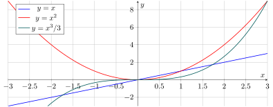
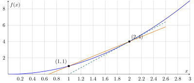
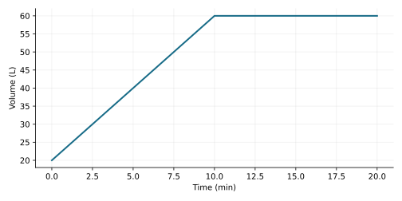

Functions, Graphs, and Multiple Representations
Opening investigation: How does a quantity change?
A laboratory records the concentration of a substance at several times. A table gives individual observations, a graph reveals overall trends, and a formula can provide predictions. Yet all three descriptions are useful only if they connect each allowed input to a single output. In this chapter, we develop the language of functions, study their graphs and rates of change, and learn to move among symbolic, numerical, graphical, and verbal representations.
Learning outcomes
By the end of this chapter, you should be able to (1) determine whether a relation is a function; (2) find and interpret domains and ranges; (3) evaluate functions and interpret notation; (4) apply the vertical-line test; (5) identify zeros, intercepts, signs, and monotonic intervals; (6) compute average rates of change; (7) translate between tables, equations, graphs, and verbal descriptions; (8) evaluate piecewise functions; (9) identify symmetry; and (10) use R and Python to investigate functions and models.
Prerequisite diagnostic
Evaluate \(3(2)^2-5\); solve \(2x+3=11\); determine the slope between \((1,4)\) and \((5,12)\); and state why \(1/(x-2)\) is undefined at \(x=2\). Answers: \(7\), \(x=4\), slope \(2\), and division by zero. Review Chapters 1–3 as needed.
A visual roadmap
The arrows emphasize that translating representations is an active reasoning process: we must preserve units, domain restrictions, and meaning.
Functions as mathematical relationships
A function assigns exactly one output to each allowable input. We write \(f:D\to\mathbb R\) when \(D\) is the domain and \(f(x)\) is the output associated with input \(x\). A relation may contain several ordered pairs with the same first coordinate; it is a function only when those pairs all have the same second coordinate. The notation \(f(x)\) means the value of the function at \(x\), not multiplication of \(f\) and \(x\).
Visual investigation. Plot \((1,2),(2,4),(3,6)\) and compare with \((1,2),(1,5),(3,6)\). Which set represents a function? Explain using input-output language.
Example 1: Testing a relation. Does \(\{(-2,4),(0,0),(2,4)\}\) represent a function?
Worked solution. Yes. Every input occurs with exactly one output. Repeated outputs are permitted: both \(-2\) and \(2\) map to \(4\).
Guided practice 1.
Decide whether the pairs \((0,1),(1,2),(1,3)\) define a function and explain why.
Domain, range, and restrictions
The domain consists of all inputs for which a formula or contextual model is defined. The range consists of all attained outputs. For real-valued algebraic functions, denominators cannot be zero and even-indexed radicals require nonnegative radicands. A contextual domain may be narrower: time since a treatment begins cannot be negative.
For \(f(x)=\sqrt{x-2}/(x-5)\), we require \(x-2\ge0\) and \(x\ne5\), giving \([2,5)\cup(5,\infty)\). The range is not obtained merely by copying the domain.
Example 2: Two restrictions. Find the domain of \(g(x)=\frac{\sqrt{9-x^2}}{x-1}\).
Worked solution. The radicand requires \(-3\le x\le3\); the denominator excludes \(x=1\). Thus the domain is \([-3,1)\cup(1,3]\).
Guided practice 2.
Find the domain of \(h(x)=\sqrt{x+4}/(x-2)\).
Function notation and evaluation
Evaluation means replacing each occurrence of the input variable with the specified number or expression. Parentheses are essential: if \(f(x)=x^2-3x+1\), then \(f(a+h)=(a+h)^2-3(a+h)+1\), which expands to \(a^2+2ah+h^2-3a-3h+1\). This expression is not \(f(a)+f(h)\) in general.
Guided investigation. Evaluate \(f(-2)\), \(f(0)\), and \(f(3)\); then compare \(f(1+2)\) with \(f(1)+f(2)\).
Example 3: Input expressions. If \(f(x)=2x^2-x\), find \(f(3)\) and \(f(t+1)\).
Worked solution. \(f(3)=2(9)-3=15\). Also \(f(t+1)=2(t+1)^2-(t+1)=2t^2+3t+1\).
Guided practice 3.
For \(f(x)=x^2-2x\), expand \(f(a+h)\) and simplify.
Graphs and the vertical-line test
The graph of \(y=f(x)\) is the set of all points \((x,f(x))\). Every vertical line intersects a function graph at most once. This vertical-line test is a geometric restatement of the one-output-per-input definition. It does not test whether a function is one-to-one; that later question uses horizontal lines.
Visual investigation. Compare \(y=x^2\) and \(x=y^2\). For the second relation, \(x=4\) corresponds to \(y=2\) and \(y=-2\), so it fails the vertical-line test.
Example 4: A circle is not a function of \(x\). Does \(x^2+y^2=9\) define \(y\) as a function of \(x\)?
Worked solution. No. At \(x=0\), both \(y=3\) and \(y=-3\) satisfy the equation. The upper semicircle \(y=\sqrt{9-x^2}\), however, is a function on \([-3,3]\).
Guided practice 4.
Explain why \(y^2=x+1\) is not a function of \(x\) on its full relation.
Intercepts, zeros, and signs
A zero of \(f\) is an input \(c\) satisfying \(f(c)=0\); its graph meets the horizontal axis at \((c,0)\). The vertical intercept is \((0,f(0))\), provided \(0\) belongs to the domain. Zeros need not be sign changes: \(f(x)=(x-2)^2\) touches the axis at \(2\) but stays nonnegative.
Visual investigation. Sketch \(x-2\), \((x-2)^2\), and \((x-2)^3\) near \(x=2\). Compare whether each crosses or touches the axis.
Example 5: Zeros and signs. Determine the zeros and sign intervals of \(f(x)=(x-1)(x+3)\).
Worked solution. Zeros are \(-3\) and \(1\). Test \(x=-4,0,2\): the signs are positive, negative, positive. Thus \(f>0\) on \((-\infty,-3)\cup(1,\infty)\) and \(f<0\) on \((-3,1)\).
Guided practice 5.
Find the zeros of \(x^2-4x\) and identify where the function is negative.
Increasing, decreasing, and constant behavior
A function is increasing on an interval when larger inputs always give larger outputs, and decreasing when larger inputs always give smaller outputs. These descriptions refer to intervals, not isolated points. For \(f(x)=x^2\), values decrease as \(x\) moves toward zero from the left and increase as \(x\) moves away from zero on the right. Its minimum value is \(0\) at \(x=0\).
Guided investigation. Create a table of \(x^2\) for \(x=-3,-2,\ldots,3\). Identify the two intervals of monotonicity and explain the turning point.
Example 6: Reading a quadratic. For \(q(x)=-(x-2)^2+5\), identify its maximum and increasing/decreasing intervals.
Worked solution. The vertex is \((2,5)\), giving maximum \(5\). The function increases on \((-\infty,2)\) and decreases on \((2,\infty)\).
Guided practice 6.
Identify the vertex and intervals of increase/decrease for \((x+1)^2-3\).
Average rate of change
For \(a\ne b\), the average rate of change of \(f\) from \(a\) to \(b\) is \(\frac{f(b)-f(a)}{b-a}\). It is the slope of the secant line connecting \((a,f(a))\) and \((b,f(b))\). In applications, attach units: if \(f(t)\) is concentration in mg/L and \(t\) is time in hours, the rate has units mg/(L hour). Average rate is not necessarily the instantaneous rate at either endpoint.
Visual investigation. For \(f(x)=x^2\), compare secant slopes over \([0,2]\), \([1,2]\), and \([1.9,2]\). What number do they approach?
Example 7: Secant slope. Find the average rate of change of \(f(x)=x^2+1\) on \([1,4]\).
Worked solution. \(f(1)=2\), \(f(4)=17\), so the average rate is \((17-2)/(4-1)=5\) output units per input unit.
Guided practice 7.
Find the average rate of change of \(x^2\) over \([2,5]\).
Multiple representations
A function can be expressed verbally, by a table, as an equation, or by a graph. Each representation highlights different information: a table shows observed values, an equation supports exact calculation, a graph displays trends, and a verbal description supplies meaning and units. Translating between representations requires checking that the same inputs and outputs are being described.
Visual investigation. A sample cools according to \(T(t)=22+58(0.8)^t\) degrees Celsius. Make a table for \(t=0,1,2,3,4\), graph the points, and describe the trend in words. Explain why the model should not be interpreted as linear.
Example 8: From table to rule. A table lists \((0,7),(1,10),(2,13),(3,16)\). Suggest a rule.
Worked solution. Outputs increase by \(3\) for each unit of input, so \(f(x)=3x+7\) matches the data. A finite table does not uniquely determine a rule without assumptions about the model family.
Guided practice 8.
Build a table for \(f(x)=4x-1\) at \(x=0,1,2,3\) and describe its graph.
Piecewise-defined functions
A piecewise function uses different rules on different portions of its domain. The conditions are part of the definition; the correct rule must be selected before substitution. Endpoints require particular care: \(x<2\) excludes \(2\), whereas \(x\ge2\) includes it. Piecewise models arise in dosing thresholds, billing schedules, and decision rules.
Visual investigation. Sketch \(f(x)=\begin{cases}x+2,&x<1\\3,&x\ge1\end{cases}\) and mark open or closed endpoints.
Example 9: Threshold rule. Let \(p(x)=\begin{cases}2x,&0\le x<5\\10+1.5(x-5),&x\ge5.\end{cases}\) Find \(p(4)\), \(p(5)\), and \(p(8)\).
Worked solution. \(p(4)=8\), \(p(5)=10\), and \(p(8)=10+1.5(3)=14.5\).
Guided practice 9.
Evaluate \(f(2)\) for \(f(x)=x^2\) when \(x<2\) and \(f(x)=x+2\) when \(x\ge2\).
Even, odd, and symmetric functions
An even function satisfies \(f(-x)=f(x)\) and has symmetry about the vertical axis. An odd function satisfies \(f(-x)=-f(x)\) and has symmetry about the origin. The domain must itself be symmetric about zero for either property to hold globally. Many functions are neither even nor odd.
Visual investigation. Plot \(x^2\), \(x^3\), and \(x^2+x\) on symmetric intervals. Predict the symmetry algebraically before checking the graph.
Example 10: Algebraic symmetry test. Classify \(f(x)=x^4-2x^2\).
Worked solution. \(f(-x)=(-x)^4-2(-x)^2=x^4-2x^2=f(x)\), so \(f\) is even.
Guided practice 10.
Classify \(x^5+x\) as even, odd, or neither.
Mathematical modeling and limitations
A useful model identifies input, output, units, domain, parameters, and assumptions. Fitting an equation to data is only one stage: predictions must be interpreted in context and checked for plausibility. Interpolation within observed conditions is usually more defensible than extrapolation far beyond them. Measurement uncertainty and omitted variables may limit conclusions.
Applied investigation. A clinic observes heart-rate recovery after exercise. Discuss why time is a plausible input and heart rate an output, why negative time may be excluded, and why a simple linear fit might fail over a long interval.
Example 11: Interpreting a model. A temperature model is \(T(t)=37+2e^{-0.5t}\) for \(t\ge0\). Find \(T(0)\) and describe the long-term prediction.
Worked solution. \(T(0)=39^\circ\)C. As \(t\) grows, \(e^{-0.5t}\) approaches zero, so \(T(t)\) approaches \(37^\circ\)C. This is a model prediction, not a clinical guarantee.
Guided practice 11.
For \(C(t)=12e^{-0.2t}\), explain the meaning of \(C(0)\) and the domain \(t\ge0\).
Visual investigation: comparing function families

Explore. Compare intercepts, signs, symmetry, and average rate of change. Find the average rate on \([0,1]\) and \([1,2]\) for each curve. Explain why a constant slope distinguishes the line from the other graphs.
Visual investigation: secants approaching a tangent

The secant through \((1,1)\) and \((2,4)\) has slope \(3\). The dashed line has slope \(4\) and touches the parabola at \((2,4)\); calculus will formalize the limiting process behind such tangent slopes. For \(f(x)=x^2\), the secant slope from \(2\) to \(2+h\) is \(\frac{(2+h)^2-4}{h}=4+h\) for \(h\ne0\). As \(h\) approaches zero, this approaches \(4\).
Computational laboratory A: function tables and graphs
Goal. Compare a linear and quadratic function using identical input values. Predict the graph before running either program. Execute the R code first, then the Python code separately.
R code
x <- seq(-3, 3, by = 0.5)
linear <- 2*x + 1
quadratic <- x^2 - 2*x
print(data.frame(x, linear, quadratic))
plot(x, quadratic, type="l", lwd=2, col="blue",
xlab="Input x", ylab="Function value",
main="Comparing function families")
lines(x, linear, lwd=2, col="red")
legend("topleft", legend=c("Quadratic", "Linear"),
col=c("blue", "red"), lty=1, lwd=2)Python code
import numpy as np
import matplotlib.pyplot as plt
x = np.arange(-3, 3.01, 0.5)
linear = 2*x + 1
quadratic = x**2 - 2*x
for a, b, c in zip(x, linear, quadratic):
print(f"{a:5.1f} {b:8.2f} {c:10.2f}")
plt.plot(x, quadratic, label="Quadratic")
plt.plot(x, linear, label="Linear")
plt.xlabel("Input x")
plt.ylabel("Function value")
plt.title("Comparing function families")
plt.legend()
plt.grid(True)
plt.show()Interpretation. Where do the graphs intersect? Why can a quadratic have two intersections with a line? Solve \(x^2-2x=2x+1\) algebraically and compare with the graph.
Computational laboratory B: domains and piecewise models
Goal. Avoid plotting invalid inputs and investigate a threshold model.
R code
x <- seq(-4, 8, length.out=500)
y <- ifelse(x >= 2 & abs(x-5) > 1e-8,
sqrt(pmax(x-2, 0))/(x-5), NA_real_)
plot(x, y, type="l", col="blue", lwd=2,
xlab="x", ylab="f(x)", ylim=c(-4, 4))
abline(v=5, lty=2, col="red")Python code
import numpy as np
import matplotlib.pyplot as plt
x = np.linspace(-4, 8, 500)
y = np.full_like(x, np.nan)
valid = (x >= 2) & (np.abs(x-5) > 1e-8)
y[valid] = np.sqrt(x[valid]-2)/(x[valid]-5)
plt.plot(x, y)
plt.axvline(5, linestyle="--")
plt.ylim(-4, 4)
plt.xlabel("x")
plt.ylabel("f(x)")
plt.grid(True)
plt.show()Interpretation. Explain why the graph begins at \(x=2\) and has a break at \(x=5\). Explain why the numerical plot cannot replace the algebraic domain argument.
Computational laboratory C: average rates and calculus readiness
Goal. Observe secant slopes as the second point approaches the first.
R code
f <- function(x) x^2
h <- c(1, 0.5, 0.1, 0.01, 0.001)
slope <- (f(2+h)-f(2))/h
print(data.frame(h, slope))Python code
def f(x):
return x**2
for h in [1, 0.5, 0.1, 0.01, 0.001]:
slope = (f(2+h)-f(2))/h
print(f"h={h:7.3f}; secant slope={slope:.5f}")Interpretation. Predict the limiting slope and prove it by simplifying the difference quotient. Why must \(h\ne0\) in the original expression?
Extended guided workshops
Workshop 1: Medication concentration and domain
A model \(C(t)=18/(t+2)\) describes concentration for \(0\le t\le10\) hours. Evaluate \(C(0),C(2),C(10)\); identify the contextual domain and range; calculate the average rate over \([0,2]\); explain why the rate is negative.
Reflect.
State which representation (table, graph, formula, or words) was most useful for each part and why.
Workshop 2: Temperature thresholds
A storage unit has temperature \(T(t)=4+3\sin(\pi t/6)\) for \(0\le t\le12\). Determine \(T(0),T(3),T(6),T(9)\) and sketch the graph; identify the maximum and minimum; explain the role of the time domain.
Reflect.
State which representation (table, graph, formula, or words) was most useful for each part and why.
Workshop 3: Piecewise transport costs
A delivery service charges \(F(d)=8+2d\) for \(0\le d\le5\) and \(F(d)=18+1.5(d-5)\) for \(d>5\). Evaluate \(F(0),F(5),F(8)\), draw the graph, and discuss whether the model is continuous at \(d=5\).
Reflect.
State which representation (table, graph, formula, or words) was most useful for each part and why.
Workshop 4: From data to models
A study records \((t,y)=(0,10),(1,15),(2,22),(3,31)\). Compute first differences and second differences, propose a quadratic rule, verify it, and explain why the table alone cannot prove the rule is unique.
Reflect.
State which representation (table, graph, formula, or words) was most useful for each part and why.
Workshop 5: A difference-quotient preview
For \(f(x)=3x^2-2x\), derive \([f(a+h)-f(a)]/h\) for \(h\ne0\). Simplify fully and explain what happens as \(h\) becomes very small.
Reflect.
State which representation (table, graph, formula, or words) was most useful for each part and why.
Chapter review exercises
Instructions. Show reasoning, label axes and units when appropriate, and verify solutions using a second representation when possible.
Determine whether \(\{(-1,3),(0,3),(2,4)\}\) is a function. Explain.
Determine whether \(\{(-1,3),(-1,4),(2,4)\}\) is a function.
Find the domain of \(\sqrt{2x-6}\).
Find the domain of \(1/(x^2-9)\).
Find the domain of \(\sqrt{x+1}/(x-4)\).
Find the domain of \(\sqrt{16-x^2}\).
For \(f(x)=2x^2-3x+1\), compute \(f(-2)\) and \(f(1/2)\).
For \(f(x)=x^2+4x\), simplify \(f(a+h)-f(a)\).
Find the zeros and \(y\)-intercept of \(f(x)=x^2-5x+6\).
Determine the sign intervals of \((x-4)(x+2)\).
Explain why \(x^2+y^2=16\) does not define \(y\) as a function of \(x\).
Identify the maximum or minimum of \(f(x)=(x-3)^2+2\).
Find the average rate of change of \(x^2+2x\) on \([1,3]\).
Find the average rate of change of \(1/x\) on \([1,2]\).
Classify \(x^6+2\) as even, odd, or neither.
Classify \(x^3-4x\) as even, odd, or neither.
For \(f(x)=\begin{cases}x+1,&x<0\\x^2+1,&x\ge0\end{cases}\), compute \(f(-2),f(0),f(3)\).
Construct a table for \(y=3x-2\) at \(x=-2,-1,0,1,2\).
A function has points \((0,5),(1,8),(2,11)\). Suggest a linear rule and explain the assumption.
For \(f(x)=x^2\), find secant slopes on \([1,2]\), \([1,1.5]\), and \([1,1.1]\).
A clinic model is \(H(t)=70+20e^{-t/3}\) for \(t\ge0\). Interpret \(H(0)\) and the long-term prediction.
Explain the difference between the domain of a formula and the contextual domain of a model.
Give an example of a function that has two different inputs with the same output.
Give an example of a relation that fails the vertical-line test.
Explain why a table of five observations cannot establish a unique formula.
For \(g(x)=\sqrt{x-1}\), determine the domain and range.
For \(f(x)=|x-2|\), identify the minimum and intervals of decrease/increase.
For \(f(x)=2x+3\), show algebraically that the average rate of change is always \(2\).
Describe a plausible real-world situation modeled by a piecewise function.
Write a short explanation of how a secant slope leads toward the derivative concept.
Calculus-readiness checkpoint
Simplify \(\frac{(x+h)^2-x^2}{h}\) for \(h\ne0\) and explain why direct substitution \(h=0\) is initially invalid.
A position model is \(s(t)=t^2+3t\). Find its average velocity from \(t=1\) to \(t=3\).
Describe the difference between average rate of change over an interval and instantaneous rate of change at one input.
Sketch a function with a jump at \(x=2\). Explain why a graph can communicate information that a table might miss.
Explain why understanding domain restrictions matters before studying limits and derivatives.
Further investigations and mathematical reasoning
These investigations extend the chapter beyond routine substitution. They are suitable for collaborative classroom work, written homework, or computational follow-up.
Extended investigation 1: Input-output reasoning and common misconceptions
For each relation, explain whether the rule is single-valued, whether two inputs can share an output, and whether the stated domain changes the conclusion: (a) \(y=|x|\) on all real numbers; (b) \(y=\pm\sqrt{x}\) for \(x\ge0\); (c) \(y=1/x\) for \(x\ne0\); (d) \(y=\sqrt{x^2}\) for all real \(x\). In case (d), note that \(\sqrt{x^2}=|x|\), not always \(x\). Construct a table for \(x=-2,-1,0,1,2\) and compare the two formulas.
Reasoning prompt. A student says that \(f(2)=f(-2)\) proves that \(f\) is not a function. Explain the error by referring to the definition. Write your explanation as if addressing a classmate.
Write and explain.
Record your calculations, a sketch or table where appropriate, and a two- to three-sentence interpretation. Compare the strengths and limitations of the representations you used.
Extended investigation 2: Domains from combined operations
Consider \(f(x)=\sqrt{6-x}\) and \(g(x)=1/(x+2)\). Find the domains of \(f+g\), \(fg\), and \(f/g\). Explain why the domain of \(f/g\) must also exclude inputs at which \(g(x)=0\). For these particular formulas, \(g(x)\) never equals zero on its domain, so all three combined expressions have domain \((-\infty,-2)\cup(-2,6]\).
Extension. Replace \(g(x)\) with \(h(x)=x-1\) and find the domain of \(f/h\). Contrast the excluded input \(x=1\) with the square-root endpoint \(x=6\).
Write and explain.
Record your calculations, a sketch or table where appropriate, and a two- to three-sentence interpretation. Compare the strengths and limitations of the representations you used.
Extended investigation 3: Recovering a formula from a graph
A line crosses the vertical axis at \((0,4)\) and passes through \((3,10)\). Use the slope formula to derive \(f(x)=2x+4\). Then identify the zero, calculate \(f(5)\), and interpret the line as a possible calibration equation with appropriate units.
A parabola has vertex \((1,-4)\) and passes through \((3,4)\). Use vertex form \(g(x)=a(x-1)^2-4\) to find \(a\). Since \(4=4a-4\), we obtain \(a=2\). Verify that \(g(x)=2(x-1)^2-4\) has the stated vertex and point. Discuss how a graph provides structural clues but may not supply exact coordinates when drawn by hand.
Write and explain.
Record your calculations, a sketch or table where appropriate, and a two- to three-sentence interpretation. Compare the strengths and limitations of the representations you used.
Extended investigation 4: Average rates in a changing process
Suppose the distance traveled by a vehicle is \(s(t)=5t^2\) meters for \(0\le t\le4\) seconds. Find average velocity on \([0,1]\), \([1,2]\), \([2,3]\), and \([3,4]\). The results are \(5,15,25,35\) m/s. Explain why a single constant-slope line would not describe the entire motion.
Investigation. Plot the four secant lines or draw their rise/run triangles. Describe the pattern in the slopes. Then compute the slope from \(t=2\) to \(t=2+h\) and simplify to \(20+5h\). This expression suggests a limiting slope of \(20\) m/s as \(h\) approaches zero, preparing the way for the derivative.
Write and explain.
Record your calculations, a sketch or table where appropriate, and a two- to three-sentence interpretation. Compare the strengths and limitations of the representations you used.
Extended investigation 5: Graphical resolution and numerical sampling
A computer plot is made by evaluating a function at a finite collection of input values and joining the resulting points. For a rapidly oscillating function or a function with a narrow discontinuity, a coarse grid can conceal important behavior. Compare sampling \(f(x)=\sin(10x)\) on \([0,2\pi]\) at 10 equally spaced points and at 500 points. Explain why a visually smooth line drawn through too few samples may misrepresent the underlying function.
Discussion. How could you detect a possible hole or asymptote by checking the symbolic formula, rather than relying solely on plotting? What would happen if the graphing software automatically connected points on opposite sides of an undefined input?
Write and explain.
Record your calculations, a sketch or table where appropriate, and a two- to three-sentence interpretation. Compare the strengths and limitations of the representations you used.
Extended investigation 6: Interpreting a real data table
A health-science team records the following illustrative values for a recovery index after an intervention: at 0, 1, 2, 3, and 4 hours, the index is 82, 75, 70, 67, and 65. Construct a labeled table and scatterplot. Calculate the successive hourly changes and explain why a linear model may be a poor long-term description.
Modeling questions. Is the input continuous even though measurements were taken only at whole hours? Does the observed table establish that the index will eventually reach zero? What additional evidence would you want before using the model for patient-level decisions? Explain why the values should be treated as illustrative rather than clinical recommendations.
Write and explain.
Record your calculations, a sketch or table where appropriate, and a two- to three-sentence interpretation. Compare the strengths and limitations of the representations you used.
Extended investigation 7: Comparing exact and approximate answers
The zeros of \(f(x)=x^2-2\) are exactly \(\pm\sqrt2\), whereas a numerical plot may suggest approximately \(\pm1.414\). Verify by substitution that the exact answers satisfy the equation. Explain why rounding a root before substitution can create a small residual.
Investigation. Estimate the positive root using the table \(x=1.4,1.41,1.414,1.415,1.42\). Compute \(x^2-2\) for each. Use the sign change to bracket the root, and explain how this idea relates to the bisection method introduced in Chapter 2.
Write and explain.
Record your calculations, a sketch or table where appropriate, and a two- to three-sentence interpretation. Compare the strengths and limitations of the representations you used.
Extended investigation 8: Piecewise endpoints and continuity intuition
Compare \(f(x)=\begin{cases}2x+1,&x<2\\5,&x\ge2\end{cases}\) and \(g(x)=\begin{cases}2x+1,&x<2\\6,&x\ge2\end{cases}\). Evaluate each at \(x=2\), and compute the value approached from inputs just below \(2\). In the first model, both sides meet at height \(5\); in the second, the rule jumps from a value near \(5\) to \(6\).
Visual investigation. Draw open and filled circles at the endpoints and explain their meanings. State, without formal limit notation, what it means for a graph to be unbroken at an input.
Write and explain.
Record your calculations, a sketch or table where appropriate, and a two- to three-sentence interpretation. Compare the strengths and limitations of the representations you used.
Extended investigation 9: Parameter sensitivity in function models
Consider the family \(f_a(x)=ax^2+1\) for \(a=-2,-1,0,1,2\). Sketch all five graphs on the same axes. Describe the effects of the sign and magnitude of \(a\). For \(a=0\), the model becomes constant; for positive \(a\), the vertex is a minimum; for negative \(a\), it is a maximum.
Applied reflection. Parameters are not always measured without error. If \(a\) is estimated from data, how might uncertainty in \(a\) affect predictions at large \(|x|\)? Compare the impact at \(x=1\) and \(x=10\) by calculating the difference between models with \(a=1\) and \(a=1.1\).
Write and explain.
Record your calculations, a sketch or table where appropriate, and a two- to three-sentence interpretation. Compare the strengths and limitations of the representations you used.
Guided-practice checks and explanations
The repeated input \(1\) has two different outputs, \(2\) and \(3\), so the relation is not a function. The failure concerns repeated inputs, not repeated outputs.
Require \(x+4\ge0\) and \(x\ne2\). Thus \([-4,2)\cup(2,\infty)\).
\(f(a+h)=(a+h)^2-2(a+h)=a^2+2ah+h^2-2a-2h\). Expanding first prevents common substitution errors.
At any \(x>-1\), the relation gives two values \(y=\pm\sqrt{x+1}\), so it is not single-valued. Restricting to \(y\ge0\) gives a function.
\(x^2-4x=x(x-4)\) vanishes at \(0\) and \(4\) and is negative for \(0<x<4\).
The vertex is \((-1,-3)\); the parabola decreases on \((-\infty,-1)\) and increases on \((-1,\infty)\).
\([f(5)-f(2)]/(5-2)=(25-4)/3=7\).
The table values are \(-1,3,7,11\); the graph is a line with slope \(4\) and intercept \(-1\).
The input \(2\) belongs to the second branch, so \(f(2)=2+2=4\).
\(f(-x)=(-x)^5+(-x)=-(x^5+x)\), so the function is odd.
\(C(0)=12\) is the initial concentration in the model’s units; \(t\ge0\) excludes times before the chosen starting event.
Self-assessment.
Identify any errors you made in the original practice set. For each, write whether the cause was an algebraic manipulation, a domain restriction, a graph-reading issue, or a conceptual misunderstanding. Correct the reasoning rather than merely copying the numerical answer.
Cumulative application: interpreting a function from four viewpoints
A laboratory device is calibrated with the illustrative model \(S(c)=2c+5\) for concentrations \(0\le c\le12\) mg/L, where \(S\) is a signal in arbitrary instrument units. Work through the following stages before consulting software.
Verbal: Explain what the input, output, slope, and intercept mean. Distinguish the physical interpretation of a signal intercept from a concentration intercept.
Tabular: Construct a table for \(c=0,2,4,6,8,10,12\) and identify the constant change in signal per 2 mg/L.
Graphical: Plot the ordered pairs and draw the line segment over the stated domain. Label both axes with units. Mark the endpoints as included.
Symbolic: Solve \(S(c)=17\) and interpret the solution. Find the average rate of change from \(c=2\) to \(c=8\).
Critical reasoning: A student uses the formula to predict the signal at \(c=50\). Explain why the arithmetic is possible but the scientific interpretation is uncertain.
Computational: Reproduce the graph using either R or Python. Compare your plot with the hand-drawn graph, and verify that the code respects the restricted domain.
Solution outline.
The slope is \(2\) signal units per mg/L and the intercept is \(5\) signal units at zero concentration. The requested signal \(17\) occurs at \(c=6\) mg/L. The average rate over \([2,8]\) is \(2\) signal units per mg/L. A prediction at \(c=50\) is extrapolation outside the calibration interval, so it needs independent validation.
Extended application: Water tank monitoring
A tank initially contains 20 liters. It fills at 4 liters per minute until it reaches 60 liters, then stays at that level. The quantities in this investigation are illustrative rather than measured observations.
Formulating the mathematical model
The proposed relationship is \[V(t)=\min(20+4t,60).\] Before calculating, identify the input and output, their units, and the interval on which the model is being studied. Distinguish the mathematical domain from the practical domain. The numerical study uses inputs from \(0\) to \(20\).
Example 12: Analytical investigation. Write the piecewise formula and find the average rate on \([5,15]\). Identify the range.
Worked solution. The transition is at 10 min. The rate is \((60-40)/10=2\) L/min; range is \([20,60]\).
Connecting numerical and graphical representations
| Time (min) | Volume (L) |
|---|---|
| 0 | 20 |
| 5 | 40 |
| 10 | 60 |
| 15 | 60 |
| 20 | 60 |

Interpretation. Compare the tabulated values with the graph. Identify the intervals over which the output increases or decreases, and distinguish a sampled extremum from an exact analytical extremum. Explain whether interpolation and extrapolation have the same justification in this setting.
R implementation
The following standalone script defines the model, generates predictions, and draws a labeled graph. Read the formula before running the code. The sampled range is a numerical diagnostic, not a proof of the exact range.
# Applied investigation: Water tank monitoring
# 1. Define the input domain and model
x <- seq(0, 20, length.out = 301)
y <- pmin(20+4*x,60)
# 2. Inspect numerical predictions
idx <- unique(round(seq(1, length(x), length.out = 5)))
print(data.frame(input = x[idx], output = y[idx]))
# 3. Visualize the model with labeled axes
plot(x, y, type = "l", lwd = 2, col = "#176B87",
xlab = "Time (min)", ylab = "Volume (L)")
grid()
# 4. Check the sampled output range
print(range(y))Python implementation
Repeat the same investigation using NumPy arrays and Matplotlib. Compare the printed predictions with the R output, allowing for rounding.
# Applied investigation: Water tank monitoring
import numpy as np
import matplotlib.pyplot as plt
# 1. Define the input domain and model
x = np.linspace(0, 20, 301)
y = np.minimum(20+4*x,60)
# 2. Inspect numerical predictions
idx = np.unique(np.linspace(0, len(x)-1, 5).round().astype(int))
print(np.column_stack((x[idx], y[idx])))
# 3. Visualize the model with labeled axes
fig, ax = plt.subplots(figsize=(7, 3.6))
ax.plot(x, y, "-", color="#176B87", linewidth=2)
ax.set(xlabel="Time (min)", ylabel="Volume (L)")
ax.grid(alpha=0.22)
ax.spines[["top", "right"]].set_visible(False)
fig.tight_layout()
plt.show()
# 4. Check the sampled output range
print(np.min(y), np.max(y))Guided practice: checking the model
Calculate the outputs at the two endpoints by hand. Compare them with the numerical table.
Select an interior input not listed in the table. Predict the output before evaluating it in either language.
Explain the meaning of the difference between the two endpoint outputs, including units. If appropriate, calculate the average rate of change.
Identify a physical assumption of the model and describe a circumstance in which it would fail.
Chapter project: investigating Water tank monitoring
Prepare a short technical report for a reader who has not studied the model. Use the preceding case as a starting point, but develop your own investigation rather than merely reproducing the worked example.
State a quantitative question that can be answered using the model. Define all variables, units, and restrictions.
Modify one meaningful numerical parameter in the formula. Explain what the change represents in the original context. Derive the revised formula and predict the direction of change before computing.
Compare the original and revised models at five common admissible inputs. Present a labeled table and explain the largest difference in the table.
Produce a graph containing both models on the same axes. Use a legend and distinguish the curves with line styles or markers. Explain the shape and any intersections.
Solve your quantitative question algebraically where possible. Verify the result using R and Python; report any differences due to numerical precision.
Discuss at least two limitations. Describe what measurements would be needed to assess the model in practice. Do not present simulated predictions as empirical evidence.
Project deliverables and assessment
Submit a two- to three-page report, the two runnable scripts, and the labeled figure. The report should stand on its own without requiring the reader to inspect the code.
| Criterion | Points |
|---|---|
| Mathematical formulation and domain | 20 |
| Analytical reasoning and verification | 25 |
| Reproducible R and Python computations | 20 |
| Graph and table quality | 15 |
| Interpretation and limitations | 20 |
| Total | 100 |
Chapter summary
A function assigns one output to each input in its domain. Its equation, table, graph, and verbal description are complementary representations. Domain and range, intercepts, signs, symmetry, monotonicity, and piecewise behavior describe different aspects of the same relationship. Average rate of change measures secant slope and provides the conceptual bridge to differential calculus. R and Python support exploration, but mathematical justification remains essential.
Companion scripts
Interactive investigation: Function representations
Enable JavaScript to explore the model.
Explore and explain: Predict the range and evaluate the function at x = 2.